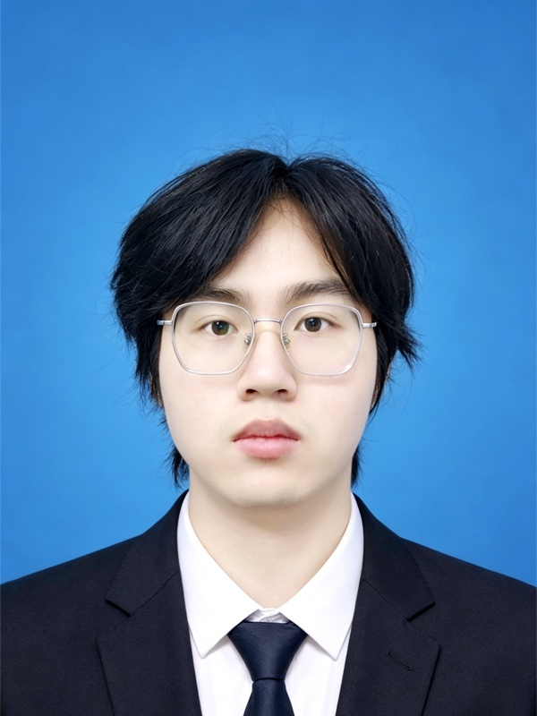

懂平台，也懂内容为什么被看见
从选题、爆款开头、脚本与封面，到拍摄沟通、剪辑反馈、发布复盘，覆盖短视频完整链路。
- 3C 测评
- 产品推荐
- 热点选题
- 标题优化
Zhang Jiangfeng · Hangzhou · 2026
我是张江葑，一名 AI + IP 操盘手 / 新媒体运营。 我把选题、脚本、制作、发布和复盘拆成可运行的工作流， 让好内容不只靠灵感，也能稳定发生。

About / 工作方法
从 3C 数码测评到 AI 日报，我关心的是同一个问题： 如何把模糊的创意，变成有标准、有节奏、有结果的内容系统。
“不是让 AI 替我思考， 而是把经验写进 流程， 让团队每一次输出都更接近正确答案。”
内容视角：熟悉 B 站、抖音、小红书、公众号与视频号的内容语境，长期关注数码、AI、二次元和年轻用户。
产品视角：用 Spec-Driven 协作、Loop 机制、PRD 与 Skill，把一次性经验沉淀成可复用工具。
运营视角：让播放、互动、投流成本、支付转化和内容效率进入同一套复盘闭环。
从选题、爆款开头、脚本与封面，到拍摄沟通、剪辑反馈、发布复盘，覆盖短视频完整链路。
用 Codex、Claude Code 与 Obsidian 拆解需求，建立模板、Loop 与 Skill，减少重复劳动和输出漂移。
围绕播放、评论、投流、转化和产出效率进行复盘，协调产品、剪辑、摄影与售前售后推进交付。
Selected Cases / 项目案例
两个 3C 内容项目，从账号定位、脚本标准到协作与复盘， 展示我如何把内容生产和业务结果连在一起。
面对 B 站 DIY 电脑带货领域排名下滑，从零搭建账号的人设定位与内容结构。 拆解头部账号、沉淀脚本和剪辑标准，并把产品 PDF、参数表、历史脚本与平台规则整理为高频场景模板。
为抖音搭建 DIY 电脑短视频内容体系。分析对标账号的人设、视频结构与内容设计， 建立脚本模板和剪辑标准，独立完成选题与文案，并协调剪辑、测试和运营完成稳定交付。
负责 3C 装机内容团队的账号运营、产品选品、视频文案、封面标题、发布和数据复盘；推动内容产出效率提升 20% 以上，并通过 SOP 保障月均 6 期以上视频更新。
参与楼宇对讲、蓝牙网关、RFID 读卡器等智慧社区终端开发与调试，覆盖通信协议、Linux 环境配置、样机联调和测试记录。
持续运营 B 站、抖音与小红书内容，尝试用 AI 完成竖屏视频的选题、制作与发布，把单条内容的动手成本压缩到约 5 分钟。
Creative Lab / Vibe Coding
这些原有子页面被保留为个人实验：有内容工具，也有只为一个氛围而生的网页。 它们不是完美产品，但记录了我如何和 AI 一起把想法做出来。
每 24 小时更新的 AI 行业纸质速报，把信息流整理成可搜索、可回看的内容库。
停止漫无目的地头脑风暴，让一个模糊选题逐步演化成可筛选、可融合、可锁定的内容方向。
把履历结构化建模，再根据不同岗位 JD 进行动态匹配和多版本生成。
一间暖光里的私密对话室。技术退到暗处，只留下靠近自己的片刻。
数字海洋上的观测船：驾驶台、航行日志、世界海图和无线电共同构成一段航程。
一部技术变迁编年史。技术终会过去，但每一粒尘都曾是某个人的一生。
正在寻找杭州的 AI 内容、新媒体运营或 AI 产品相关机会，也欢迎交流内容工作流与 Vibe Coding。